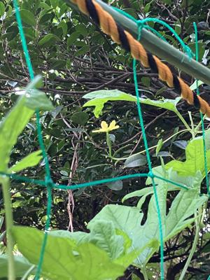
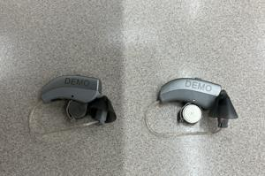

うるがいの話 ある日
最新: 腕立て伏せ３【うるがいの話 ある日】とは 一日だけのプログです
『うるがいの話』の最新一日だけのプログで、通信料が少なく経済的だ。カニの画像をクリックすると全ての日付が載る『うるがいの話』サイトを表示します
|
|
【うるがいの話】 うるがい(ｳﾙｶﾞｲ urugai)とは、『もずくがに』の名前でとても大きくなります。 |
|---|---|
|
|
【カミマヤーの話】 猫のことを方言でマヤーといいます。カミマヤー（kamimayaa）とは、神の猫のことです。 |
|
【たながぁの音楽】 たながぁ（ﾀﾅｶﾞｰ tanagaa）とは手長えびのことで、何種類かあり大きいのは車 エビぐらいになります。 |

|
【ぶながぁの話】 ぶながぁ(ﾌﾞﾅｶﾞｰ bunagaa)とは、赤い髪の毛、赤い身体、そして身長は１ｍ２０ｃｍ ぐらい、川の蟹を食べているの目撃された。場所は沖縄県国頭郡大宜味村のと ある村僕の隣近所に住んでいる爺さんから、聞いた話です。 |
|
|
【ギーマの話】 ギーマ(giima)とは、山原の里山に咲くスズランに似た、 花を付けます。実は食べられます、 気が付くと口の周りが紫になっています。 |
2025年08月09日 (土）腕立て伏せ３
16:53
右肩の痛みはないです、腕立て伏せも普通にやりました。ひねると
すこし痛みはありますが、以前よりいい状態です。
映画『宝島』の原作の本をヨメが借り、２週間限定（予約で延長が
できない）で読む、上巻（４４８頁）を読み終えた３日前、ついで
に私も読む。そして昨日下巻（２５６頁）を昼までに読み終えたの
で私は、速攻で２巻読みました（飛ばしですよ）。飛ばしているが
中学生の頃、先輩と米軍の北部訓練場へ侵入しヘリコプターに追い
かけられたこと、コザ暴動で亡くなった警官は同じ村の出身の人で
当時村は大騒ぎ、嘉手納の住人であるタカラスナオから、嘉手納基
地内で一機のＢ５２爆撃機が墜落したときの衝撃が凄かったという
体験話など思い出した。
庭に植えていたゴヤーに花が、見をつけているのに気が付いた。大
きくなるでしょうか、女の子のゴマが昨夜誕生しました。

昨夜、寝ようとしたら高校野球がまだやっていた。えーと・・・・
第４試合は史上最も遅い試合開始と終了だった。午後７時４９分に
始まり、午後１０時４６分に終わった。
あ！、補聴器の話があったが、明日にしよう。
